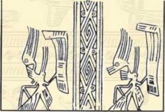
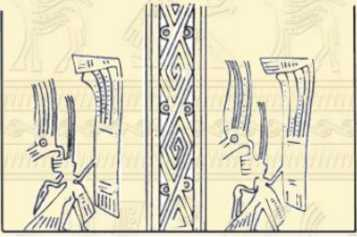

Giai Thoại 8

hân cơ hội sụp đổ của nhà Tần, Triệu Đà đã nhanh chóng tạo lập ra quốc gia Nam Việt, quyết hùng cứ một phương. Sau, nhân sự mơ hồ và mất cảnh giác của An Dương vương, Triệu Đà đã đánh chiếm được Âu Lạc. Thế là chỉ trong vòng chưa đầy ba mươi năm (từ năm 206 trước công nguyên đến năm 179 trước công nguyên), Triệu Đà trở thành kẻ đứng đầu một quốc gia khá lớn, vui thênh thang với một cõi của mình. Nhưng, chừng đó chưa đủ để có thể nhận diện chính xác về Triệu Đà.
Suốt một đời, nỗi bận tâm lớn nhất của Triệu Đà chính là sự hùng mạnh không ngừng của nhà Tây Hán hay còn gọi là nhà Tiền Hán ở đất trung nguyên Trung Quốc. Với nhà Tây Hán, Triệu Đà là người như thế nào? Sách Đại Việt sử kí toàn thư (ngoại kỉ, quyển 2, tờ 2a và 2b) chép rằng:
“Bấy giờ, nhà Hán đã định được thiên hạ, nghe tin Nhà vua (chỉ Triệu Đà - NKT) cũng xưng vương ở nước Việt, bèn sai Lục Giả sang phong Vua làm Nam Việt Vương, trao cho Vua quả ấn và dây thao, lại trao cho cả cái phẫu phù bổ đôi làm tin, khuyên Vua nên thông sứ với nhau và bảo Vua hãy giữ yên đất Bách Việt, chớ có cướp phá. Lục Giả đến, Nhà vua cứ ngồi chồm hổm mà tiếp. (Lục) Giả nói:
- Vương vốn là người Hán, họ hàng thân thuộc và mồ mả hiện đều ở nhà Hán, thế mà nay lại làm trái với tục của nước mình, muốn chiếm đất này để đối nghịch với nhà Hán, há chẳng phải là lầm lẫn hay sao? vả chăng, nhà Tần mất hươu, cả thiên hạ thi nhau đuổi, chỉ riêng Hán Đế khoan nhân, cho nên, ai cũng vui theo, khởi binh từ đất Bái, đất Phong mà vào Quan Trung để gấp chiếm Hàm Dương, dẹp trừ quân hung bạo. Chỉ trong khoảng năm năm mà loạn lạc đều yên, bốn biển được yên lặng, sức người nhất quyết không thề làm nổi, ấy là nhờ trời đó thôi. Nay Hán Đế nghe tin Vương làm vua ở đất này, lòng đã từng muốn quyết đánh một phen cho rõ được thua, nhưng vì dân vừa trải cơn lao khổ nên đành phải tạm thôi. Giờ đây, Hán Đế sai sứ sang trao ấn và dây thao cho Vương, lẽ ra, Vương phải ra tận ngoài thành nghênh đón, bái yết để tỏ lòng tôn kính (Hán Đế), thế mà Vương đã không làm, vậy, chỉ còn cách sửa lễ để tiếp sứ giả, cớ gì cậy dân Bách Việt đông để coi thường sứ giả của Thiên Tử? Nếu Thiên Tử mà biết được, khởi binh sang đánh thì vương sẽ tính sao?
Vua làm ra vẻ sợ hãi, đứng dậy nói:
- Tôi ở đất này lâu ngày, thành ra quên hết cả lễ nghĩa. Nhân đó, Vua hỏi Lục Giả rằng:
- Tôi với Tiêu Hà và Tào Tham, ai hơn?
Lục Giả đáp:
- Vương hơn chứ.
Vua hỏi tiếp:
- Thế tôi với Hán Đế, ai hơn?
Lục Giả nói:
- Hán Đế nối nghiệp của Tam Hoàng và Ngũ Đế, thống trị dân Hán có đến cả ức vạn người, đất rộng hàng muôn dặm, của nhiều, người đông, thế mà quyền bính chỉ nằm trong tay một nhà, từ khi trời đất mở mang đến nay chưa từng có. Nay, dân của Vương chẳng qua mươi vạn ở xen giữa núi và biển, bất quá cũng chỉ như một quận của nhà Hán. Vương ví với Hán thế nào được?
Nhà vua cười và nói rằng:
- Tôi lấy làm giận là đã không được dấy lên ở phía ấy, biết đâu tôi lại chẳng như nhà Hán bây giờ?
Lục Giả ngồi im lặng, mặt có vẻ rất buồn. Nhà vua bèn giữ Lục Giả lại đến vài tháng. Vua nói:
- Ở đất Việt này, không ai ngang tài để tôi có thể nói chuyện được. Nay ông đến đây, hàng ngày tôi được nghe những điều chưa từng nghe.
Nhà vua cho Lục Giả các thứ châu báu đáng giá ngàn vàng đề làm của riêng, đến khi Lục Giả về, lại còn cho thêm nghìn vàng nữa”.
Lời bàn:
Mới dựng được bờ cõi riêng, lúc đầu, hẳn nhiên là Triệu Đà nghênh ngang tự đắc, tự cho mình quyển... ngồi chôm hổm mà tiếp sứ, tự ví mình với Tiêu Hà, Tào Tham và cả Hán Đế nữa. Nhưng, cũng vì mới tạo dựng được bờ cõi riêng, Triệu Đà luôn phải canh cánh nỗi lo gìn giữ cơ nghiệp của mình. Lời của Triệu Đà và cử chỉ của Triệu Đà đã tỏ rõ như vậy. Tiếc thay, Lục Giả hình như chỉ thuộc được mấy câu nằm lòng, không đủ tài để ứng phó trước sự thay đổi thái độ của Triệu Đà. Mới hay, chọn sứ giả không dễ một chút nào.
Việc Lục Giả ngồi im lặng, mặt có vẻ rất buồn đã khiến cho Triệu Đà khôn ngoan nhún nhường, cố giữ và cố tìm cách khai thác mọi nguồn tin từ Lục Giả. Và, Triệu Đà quả đã nghe được những điều chưa từng nghe. Cho nên, Triệu Đà hậu hĩ với Lục Giả mà có lỗ lã gì đâu. ôi, khiếp thay, Triệu Đà!
Về sau, Nam Việt bị nhà Tây Hán thôn tính, nhưng đó chỉ là chuyện về sau, chuyện khi Triệu Đà đã nhắm mắt xuôi tay rồi. Bình sinh, Triệu Đà quả là người sục sôi chí cả. Chẳng thể nào ví đó là kẻ cướp nước ta mà ta không thừa nhận điều này.

